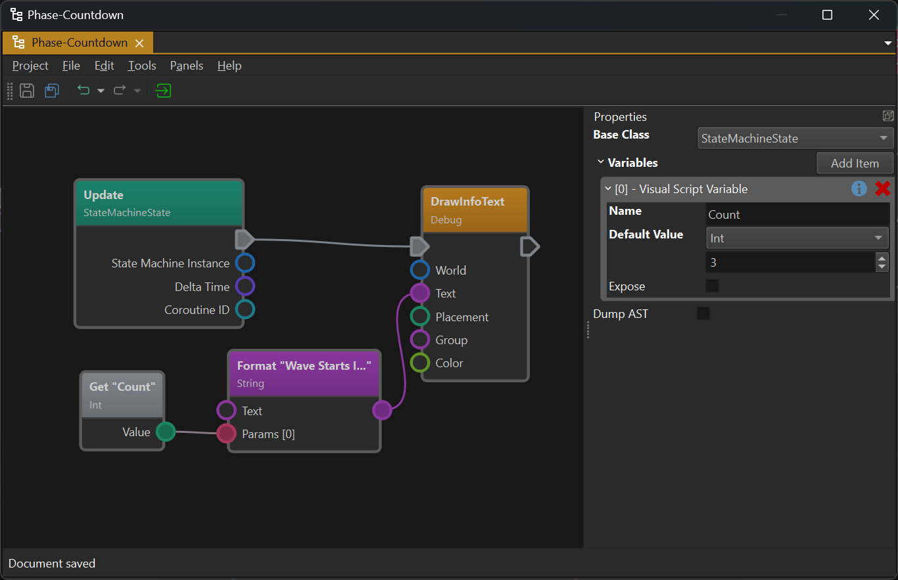
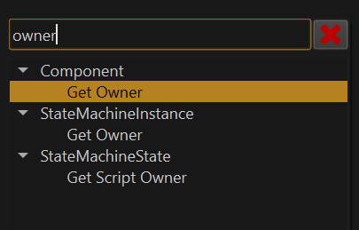
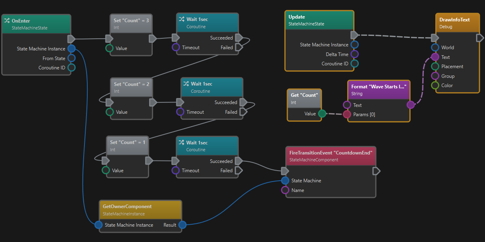
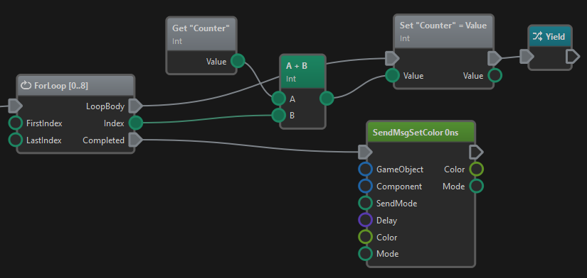

Visual Script Class Asset
The Visual Script Class asset enables you to define custom logic for components and state machines using a visual programming language. Its intended use is to bridge the gap between what other components provide. For example a trigger component provides an event when something enters an area, and a spawn component can spawn a prefab, however, to have a creature spawn in a room when the player enters it, you need something that connects the two. Visual scripts are a great way to accomplish this.
Visual Script Editor

The image above shows the visual script editor layout. On the left is the graph editor where you can add and connect nodes. Right-click and drag to pan the view. Use the mouse wheel to zoom.
On the right is the property panel which shows the properties of the selected node. Node connections cannot be selected and don't have properties.
When nothing is selected, as in this case, the general script properties are displayed.
Script Base Class
Deselect all nodes to see the script properties. The Base Class property defines in which scenario the script may be used.
Base Class: Component
When Component is selected as the base class, the script acts like a component. Component specific functions like Component::GetScriptOwner() are only available with this base class.
These scripts are used in conjunction with the script component to execute them.
Base Class: State Machine State
When StateMachineState is selected as the base class, the script acts like a custom state for a state machine. In this case, different functions are available, such as StateMachineState::GetScriptOwner().
These scripts are used in state machines through the script state.
Visual Script Variables
Through the general script properties you can add variables to your script. These may just be internal variables to keep track of state, but when the Expose flag is enabled, they become exposed parameters. These variables will show up where the script is used (for example on script components) and allow you to pass in different starting values.
Editing Visual Scripts
To build a visual script, right-click into the graph editor to open the context menu:

The menu shows all the available nodes that can be added. Type into the menu's header to search for specific items.
Nodes have pins on the left or right side with which they can be connected. The flow of execution and data goes from left to right. You connect pins via drag and drop. Every pin has a color-coded type. Not all pin types are compatible. Once you start dragging from a pin, all incompatible pins are greyed out and connections snap towards compatible pins. Depending on the target pin type, a data conversion may happen. For example, if a number pin is connected with a string pin, the number will be converted to text.
Nodes
When you select a node, you will see its properties on the right.
When a node has input pins (pins on the left), it often also has properties for those pins. This is used for setting an input to a constant value, rather than passing it in through the pin. So when an input pin is unconnected, the script will use the value from the property grid.
Some nodes have additional configuration properties, that cannot be passed in through a pin, for example GameObject::TryGetComponentOfBaseType() where you have to select the desired base type.
Execution Pins
Execution pins are the grey, arrow-shaped pins at the top of nodes. Not all nodes have them. These pins define the order in which nodes are executed. Only very few nodes have only an outgoing execution pin. These are entry points for the script, meaning they are where script execution starts. For instance, in the image at the top, the Update node is an entry point. Whenever the script gets updated (usually once every frame), this node gets executed. After that, the node that is connected to it through an execution pin gets executed. This continue until the last node in a chain was executed.
Some nodes have multiple outgoing execution pins, such as the Switch nodes. These nodes are used to conditionally execute one or another code path.
When a node has an incoming execution pin, it must be connected to something, otherwise the node can never be executed. However, nodes that do not have execution pins, at all, are executed on demand whenever their output is needed by another node that is being executed.
Data Pins
All the round pins are data pins meaning they represent some kind of data. Many different types of data are supported. Numbers are generally convertible into other number types, and nearly everything can be converted to the string type, but most other types mostly exist to be passed unmodified from one node to another.
Coroutines
The flow of execution starts at an entry point node and follows the execution pins to the right until the last node is reached. Usually this will happen within on script update and thus all nodes along the path are executed within the same game tick.
Coroutines allow you to pause execution at any point in the graph, and have the script continue there at a later time. Consequently, a script may have multiple threads of execution, meaning that there might be several execution paths active over a longer period of time.
Have a look at this script:

There are two entry points, the OnEnter node and the Update node. OnEnter is only executed once when the state machine state got activated. However, Update is executed once every game tick (every frame).
The OnEnter code path uses the Wait function. This turns the entire execution path into a coroutine. What this means is that when Wait is encountered, this execution path pauses for a second. After the wait is over, it continues from that point until it runs into the next Wait call.
Tip:
When an execution path uses coroutine functionality and thus may execute over a longer duration, the entry point node of that path shows an extra icon of two crossing arrows in its top left corner. See the
OnEnternode in the image above and compare it to theUpdatenode, which is not a coroutine.
In the mean time, the Update node is executed every frame. Thus when it runs, you already have two threads of execution, the one starting in the Update node which finishes right away, and the one that started from the OnEnter which is dormant for a time, but continues after a while.
Coroutines are a powerful and very convenient feature, as they make it possible to write code in a very linear fashion, even though there are complex, temporal dependencies.
A common use case for coroutines is to sequence AI tasks or quest objectives. For example one may instruct an NPC to walk to a position and then sit down. The command to walk somewhere is given through a node. But then an AI system has to calculate a path and steer the creature around obstacles to make it reach that point. None of this is part of the visual script, instead the walkTo node would be a coroutine node that pauses the script until the task is fulfilled or failed. On success the script would then run the next node to play the sit down animation. So the script is very simple, even though walking to a spot is a very complex operation.
Coroutine Modes
When an entry point node gets executed that already spawn a thread of execution before, and that thread is not yet finished, there are three different ways to continue.
Stop Other: In this case, the existing coroutine gets canceled without notice. Use this mode when you always only want to react to the latest update. For example, you may have a coroutine that moves a creature to a picked location when the player clicks somewhere. Once the player clicks somewhere else, you would want the creature only to walk to the new target, and want to cancel the previous coroutine.
Don't Create New: In this mode you let an existing coroutine fully finish before starting a new one. For example a door would react to a button press by fully opening or closing and only react to another button press when the first action is over.
Allow Overlap: In this mode every single event would spawn a new coroutine, which all execute in parallel. For example a timer may fire once a second and every time you want to react to this by doing something complex, then you would use this mode to react to all events equally.
The coroutine mode is selectable on every entry point node.
Advanced Coroutine Features
Every entry point provides a coroutine ID. This can be used to cancel a specific coroutine if needed. Similarly, there are functions to stop all coroutines or start separate ones. You can also use the Yield node to interrupt a script at a specific point and have it continue in the next frame.
Loops
You can execute loops to iterate over data or repeat certain actions. Several different loop nodes are available. They all operate in the same way, that they have two outgoing execution pins. One execution pin is for the loop body. This execution path will be executed repeatedly until the loop is finished. Finally, the completed execution pin is executed to continue with the code that comes after the loop.
For example, the following script loops from 0 to 8 (inclusive) and for each iteration it adds the loop index to the counter variable. After the loop has been completed the execution flow continues at the completed pin, so a SetColor message is sent to the owner game object. Also note that the loop body contains a Yield statement so the loop is paused after every iteration and resumed the next frame (see the coroutines section above).

Node Types
The following broad categories of nodes exist:
Event Handlers
Event handlers are nodes that get executed when a certain message is sent to any of the objects that this script is responsible for. All event handlers are entry points into the script and most scripts will only execute as a reaction to an event.
Blackboards
All the nodes for working with blackboards.
Clock
There are two clocks, the global clock and the world clock. The global one always advances in real-time and should be used for animating things that are independent of the game speed. The world clock should be used for all game-play functionality that should slow down or speed up according to the game's speed, so that they work correctly in slow-motion.
Component
Here you find all functionality shared by all components such as:
GetOwner: Returns the components owner game object.GetWorld: Returns the world that the component belongs to.
Additionally, all component specific functionality can be found in the sub-menus.
Coroutine
Here you find all functionality to work with coroutines, see the coroutines section above.
Debug
These nodes are for debug rendering.
Enums
These nodes are for working with enum values. There are two node types for each enum. The value nodes just return a fixed value and can be used to pass along. The switch nodes are used for reading an enum value and then executing a code path depending on the value.
Game Object
Game objects nodes are for reading and writing object transforms, finding and accessing child objects and components.
Log
Nodes for logging.
Logic
This group contains mathematical logic operators as well as conditions and loops. Very important nodes are:
Branch: Anifcondition node with two possible outcomes.Switch: Several variants to map one value to multiple possible outcomes.Compare: Checks whether two values are equal, with a boolean result.Is Valid: Checks whether the incoming value, such as a game object or component, can still be used.
Math
All sorts of mathematical operations for working with number types.
Messages
While event handlers react to messages, the script can also send messages to other objects. Messages can be sent directly to a component, or to a game object, in which case they may be broadcast to all components on that object, or even to the whole sub-tree of objects and components. If the Send Mode is set to Event, however, they are delivered not downwards in the hierarchy, but upwards along the parent chain of the target object, to the closest component that handles this type of message. See this chapter for details.
Property
For reading and writing component properties.
StateMachineInstance and StateMachineState
For interacting with state machines. This is mainly necessary when the script itself is used as a StateMachineState. Be aware that the state machine instance in which the script is run, is passed into the script through the OnEnter, OnExit and Update nodes.
String
For working with strings, e.g. to format a string by combining variable values.
Time
For working with the time data type.
Type Conversion
These nodes are for converting variables from one type to another. Especially important is the ConvertTo node, which is used for converting a Variant to an expected type. A Variant is a variable that can contain data of many different types. When a node returns a variant, you usually expect that it contains a certain type and using the ConvertTo node, you can get to it.
Variable Nodes
These nodes operate on visual script variables. The variables have to be declared on the script first. Use these to keep track of state within the script and also to read state that was passed in through exposed parameters.
World
These nodes provide access to the world, which is used for managing objects.